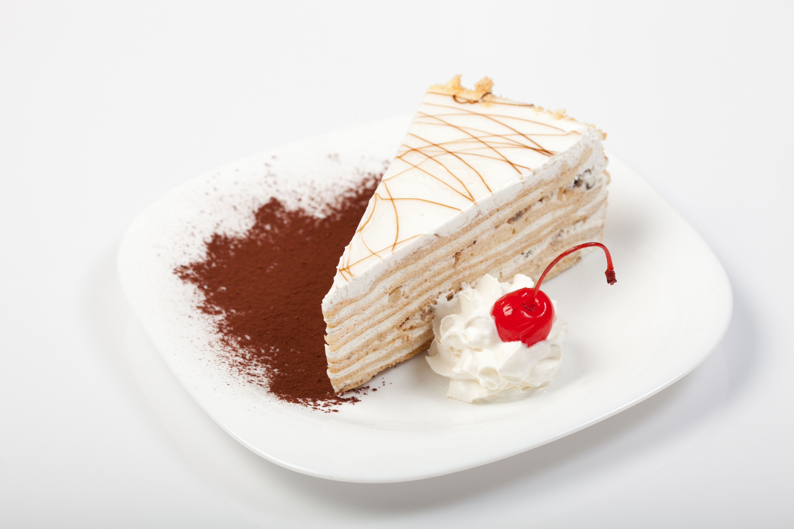

Tri/Foi este un restaurant modern situat într-o locație deosebită, unde pasiunea pentru gătit și rafinamentul gusturilor se întâlnesc pentru a crea o experiență culinară unică. Fiecare detaliu al restaurantului este gândit cu atenție, iar atmosfera elegantă și primitoare te va face să te simți ca acasă.
Menu-ul restaurantului este variat și cuprinde atât preparate tradiționale, cât și inovații culinare. De la aperitive ușoare, care îți deschid apetitul, până la feluri principale pline de savoare, toate ingredientele sunt alese cu grijă pentru a oferi o gustare desăvârșită. Meniul este completat de o selecție de deserturi rafinate, care vor satisface orice poftă de dulce.
În ceea ce privește atmosfera, Tri/Foi îmbină perfect eleganța cu confortul. Restaurantul dispune de un decor modern, dar cu elemente tradiționale care aduc un omagiu istoriei culinariei locale. Fiecare masă este gândită pentru a oferi intimitate și relaxare, fie că ești într-o seară romantică, fie că te afli la o cină de afaceri.
Un alt punct forte al restaurantului este serviciul de calitate. Echipa de personal este atentă și profesionistă, gata să îți ofere cele mai bune recomandări din meniu și să îți asigure o experiență plăcută pe toată durata vizitei.
De asemenea, Tri/Foi se mândrește cu selecția sa de băuturi fine, inclusiv vinuri selecte, cocktailuri inovative și băuturi tradiționale care se potrivesc perfect cu preparatele din meniu. Fiecare băutură este aleasă pentru a complementa perfect preparatele, oferind o experiență culinară completă.

250 Lei
Disponibilă
400 Lei
Oferte specialede a 150 Lei
IndisponibilăLa restaurantul Tri/Foi, ne mândrim cu ofertele noastre speciale care transformă fiecare masă într-o experiență deosebită. Avem reduceri exclusiviste pentru grupuri mari și pachete speciale pentru evenimente unice, astfel încât să te bucuri de preparatele noastre delicioase la prețuri accesibile. În plus, oferim meniuri personalizate pentru diverse ocazii, fie că este vorba despre o cină romantică, un prânz de afaceri sau o sărbătoare deosebită. Nu rata ocazia de a savura un meniu gourmet într-un ambient rafinat, la prețuri avantajoase. Abonează-te la newsletter-ul nostru pentru a fi printre primii care află despre noile oferte și promoții exclusive!

La restaurantul Tri/Foi, suntem o echipă dedicată, pasionată de gastronomie și ospitalitate. Fiecare membru al echipei joacă un rol esențial în oferirea unei experiențe de neuitat vizitatorilor noștri. Ne străduim să oferim servicii de calitate superioară și să menținem standarde înalte în fiecare aspect al restaurantului, de la preparatele delicioase până la atmosfera primitoare. Împreună, creăm o atmosferă caldă și profesională, în care fiecare vizită devine un moment special.
Restaurantul Tri/Foi a fost înființat de o echipă de antreprenori cu viziune, care au dorit să aducă un concept inovator în lumea gastronomiei. Fondatorii sunt dedicați să ofere clienților o experiență culinară de excepție, inspirată de tradiția culinară, dar cu o notă modernă. Cu o experiență vastă în industria ospitalității, aceștia au pus bazele unui loc în care se întâlnesc pasiunea pentru mâncare, dorința de a inova și angajamentul față de excelență.
Echipa de bucătari de la Tri/Foi este adevărarea artizani ai gustului, cu o pasiune profundă pentru ingrediente de calitate și preparate rafinate. Fiecare fel de mâncare este pregătit cu atenție și precizie, punându-se accent pe respectarea tradiției culinare, dar și pe inovație. Bucătarii noștri sunt adevărați maeștri ai artei culinare, care se dedică să creeze preparate care nu doar încântă papilele gustative, dar și sunt o adevărată operă de artă vizuală.
Ospătarii Tri/Foi sunt cei care asigură ca fiecare vizită să fie o experiență memorabilă. Cu o atitudine prietenoasă și o mare atenție la detalii, ei sunt mereu gata să ofere oaspeților servicii impecabile. Fiecare membru al echipei noastre de ospătari este bine pregătit, nu doar pentru a servi mesele, dar și pentru a crea o atmosferă primitoare și confortabilă. Indiferent dacă este vorba despre recomandarea unui vin perfect sau despre o sugestie din meniul nostru, ospătarii noștri sunt acolo pentru a răspunde nevoilor fiecărui client.